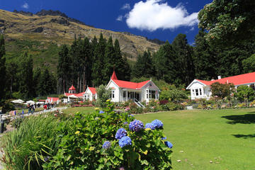

Famous Tourist spots in Queens Town
1.Paradise Valley
Paradise Valley full day tour is the perfect activity for families and small groups,
offering flexibility to accommodate your personal interests whether they be walking,
photography or viewing movie locations of Lord of the Rings or The Hobbit.This tour will
allow you to leave your worries behind as you take your time exploring all the Glenorchy
region has to offer. It is the ultimate tour for those wanting a leisurely day with great
food, and optional walks.
2.Kwarau River Tours
The river is extremely popular with thrill seekers who come for river surfing, riverboarding
and jet boating. The white-water rafting is particularly excellent with rapids to suit beginners
to experienced rafters and some calm stretches where you can rest and take in the spectacular scenery.

3.Walter Peak High Country Farm Tours
Experience the tranquility of New Zealand’s South Island farm life with a visit to Walter Peak
High Country Farm, a working sheep and cow station. The remote farm sits across Lake Wakatipu from
Queenstown, along a section of lakeshore largely inaccessible by car.